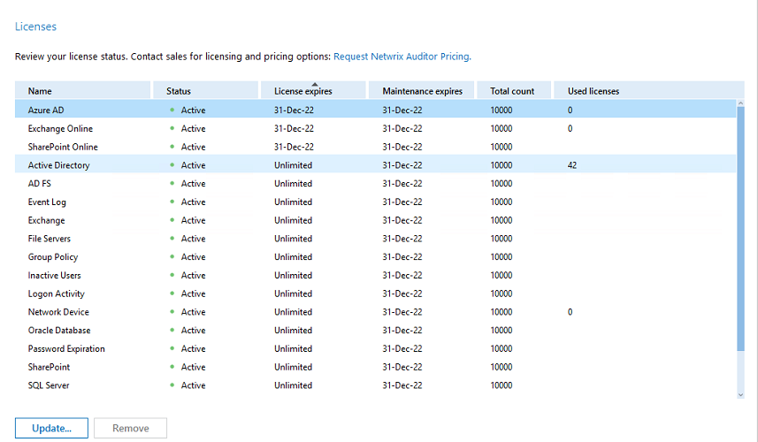

What is Netwrix Auditor licensing model?
By default, Netwrix Auditor applications are licensed based on subscription. A subscription license enables the customer to use Netwrix Auditor for a certain period. The subscription is purchased on a monthly or yearly basis, and it includes product updates and technical support.
What license counts are used in Netwrix Auditor licenses?
Most Netwrix Auditor applications are licensed per enabled AD user. Review the table below for more information:
| Applications | License counter |
| On-Premise | |
| Netwrix Auditor for Active Directory | Per enabled AD user |
| Netwrix Auditor for EMC | Per enabled AD user |
| Netwrix Auditor for NetApp | Per enabled AD user |
| Netwrix Auditor for Network Devices | Per device |
| Netwrix Auditor for Nutanix Files | Per enabled AD user |
| Netwrix Auditor for Oracle Database | Per processor |
| Netwrix Auditor for SQL Server | Per enabled AD user |
| Netwrix Auditor for VMware | Per enabled AD user |
| Netwrix Auditor for Windows File Servers | Per enabled AD user |
| Netwrix Auditor for Qumulo File Servers | Per enabled AD user |
| Netwrix Auditor for Synology File Servers | Per enabled AD user |
| Netwrix Auditor for Window Server | Per enabled AD user OR Per server |
| Netwrix Auditor for Access Reviews | Per enabled AD user |
| Cloud | |
| Netwrix Auditor for Microsoft Entra ID (formerly Azure AD) | Per enabled Microsoft Entra ID user |
| Hybrid Licenses | |
| Netwrix Auditor for Exchange | Per enabled user mailbox on-premises and in the cloud |
| Netwrix Auditor for SharePoint | Per enabled Microsoft Entra ID user |
| Netwrix Auditor for MS Teams | Per enabled Microsoft Entra ID user |
How to count enabled AD users?
To count the number of licenses, you should provide the number of Enabled AD user accounts, that is, calculate the number of your Active Directory user accounts in the Enabled state. Follow the instructions provided in this Netwrix Knowledge Base article: How to determine the number of enabled user accounts for Netwrix Auditor. Then round up the calculation result to reserve some space for growth and to prevent scalability issues. For example:
- If the calculation script returned the value of 214, round up this value to 220 when applying for the license.
- If the calculation script returned the value of 1841, round up this value to 2000 when applying for the license.
IMPORTANT:
Service accounts are also counted. The accounts under which the services run in your infrastructure are included in the license count and, eventually, in the cost of a license
Deleted, disabled, group, or computer accounts are not included in the license count.
You can use either Omitallowedpathlist omit list to reduce User count by omitting certain OUs from being audited or specify omitted OUs in Netwrix Auditor UI. You will not gain any information from these OUs, however the amount of licenses will be reduced. For additional information on reducing the user count via Netwrix Auditor UI, refer to the following article: Reducing the Used License Count. For additional information on omit lists, refer to the following article:How to Use Omit Lists
What should I provide for Netwrix Auditor for Network Devices licensing?
For that, you should provide the number of source IP addresses of your network devices. This count is used to estimate the number of licenses required to audit the Network Devices data source. To learn more, read the How to count the number of your network devices in your configuration article.
IMPORTANT: You should count all physical devices regardless of your forwarding configuration
What should I provide for Netwrix Auditor for Oracle Database licensing?
The licensing for Netwrix Auditor for Oracle Database is based on the number of processor
licenses utilized by the entire Oracle Database deployment, i.e. the number of processor
licenses you purchased from Oracle.
Oracle defines the number of processor licenses
as follows:
“The number of required licenses shall be determined by multiplying the total number of
cores of the processor by a core processor licensing factor specified on the Oracle
Processor Core Factor Table.”
If you are unsure how many Oracle processor licenses you have, check your processor
type, find the corresponding factor in the Oracle Processor Core Factor Table, and multiply it by the number of CPU cores on your Oracle Database deployment.
To
obtain the number of CPU cores, go to the
How to count number of CPU cores on your Oracle Database deployment
article.
What should I provide for Netwrix Auditor for Windows Server licensing?
Netwrix Auditor for Windows Server is licensed either by the number of enabled AD users or
the total number of virtual and physical servers.
Refer to the questions above for
more information on how to count the number of AD accounts in
the Enabled state.
For per-server licensing, count, and provide the total
number of the servers (physical or virtual) you are going to monitor with Netwrix Auditor.
What should I provide for Netwrix Auditor for Microsoft Entra ID licensing?
For that, you should provide the number of Enabled Microsoft Entra ID user accounts. Starting from 9.96, Guest/external users are not included in the license count. Follow the instructions outlined in the How to Determine the Count of Enabled Microsoft Entra ID Accounts article.
What should I provide for Netwrix Auditor for Exchange licensing?
For the Exchange data source, Netwrix offers a convenient hybrid pricing model
specifically designed for prospects with a hybrid Exchange (on-premises Exchange Server +
Exchange Online) deployment. You can also have an on-prem-only or a cloud-only Exchange
environment.
To get a hybrid Exchange license, you need to provide the total number of user mailboxes, both on-premises and online.
For example, you have 200 online mailboxes and 300 on-prem Exchange mailboxes. In
this case, you need to purchase a license for 500 mailboxes.
To calculate the number
of user mailboxes used in your Microsoft Office 365 tenants, refer to the guidelines
presented in the article titled
How to count number of licenses required for auditing a Microsoft Office 365 tenant
IMPORTANT: A user mailbox can be a personal mailbox, an Online Archive mailbox, or both. Shared and resource mailboxes do not count. For example, if an Exchange Online user has one personal mailbox and one Online Archive mailbox, this user will be counted as a single licensed object. If a user has no Online Archive mailbox but three personal mailboxes, this will be counted as three licensed objects.
What should I provide for Netwrix Auditor for SharePoint licensing?
For the SharePoint data source, Netwrix offers a convenient hybrid pricing model
specifically designed for prospects with a hybrid SharePoint (on-premises SharePoint +
SharePoint Online) deployment. You can also have an on-prem-only or a
cloud-only SharePoint environment.
To get a hybrid SharePoint license, you need
to provide the total number of AD users (both enabled AD users on-premises
and cloud-only Microsoft Entra ID users).
For example, you have 450 enabled
on-prem AD users and 50 active Microsoft Entra ID users. In this case, you need
to purchase a license for 500 users.
I’m auditing SQL servers only, and the Licenses window shows that the license was exceeded not only for the SQL Server but also for Active Directory and others. Why?
When Netwrix Auditor is running, the number of enabled AD user accounts (license count that applies to the corresponding monitoring areas) is refreshed by the Netwrix Auditor component responsible for AD data collection. If this count is exceeded, your SQL Server audit gets out of compliance with the existing license. Moreover, you have no opportunity to start auditing any other data source that depends on this count (e.g. VMware or Windows Server).
How can I obtain a license?
To obtain a proper license for your infrastructure, you should provide the corresponding
counts to Netwrix. Then you will receive the license key to address your auditing needs,
based on the numbers you provided.
For evaluation purposes, you can use a free trial
version of Netwrix Auditor that has a bundled trial license.
To update or add a license in Netwrix Auditor Console:
- Go to Settings-Licenses Click Update.
-
In the dialog that opens, do one of the following:
- Select Load from file, click Browse and point to a license file received from your sales representative.
- Select Enter manually and type in your company name, license count and license codes.
To request more licensing information, please contact licensing@netwrix.com
What is displayed in the License window of the product UI?
You can use the Licenses window to review the status of your current licenses,
update them, and add new licenses.
On the Netwrix Auditor main screen, click the
Settings tile and then select Licenses. The window will look as shown below.

Here:
- The Total count field shows how many licensed objects (enabled AD users, processors, or mailboxes) are included in your current license. This number is displayed for each licensed monitoring area. If you are running a trial version, this field will show “Unlimited” for all data sources.
- The Used licenses field shows the number of licensed objects counted at the moment.
NOTE: The number of used licenses are displayed only in the cells that correspond to the baseline data sources: Active Directory (and Microsoft Entra ID), Exchange, and Network Devices.
How do I remove license information for an unused application?
You may choose to no longer audit a data source, and thus not renew the license for the corresponding application. Unused licenses do not need to be removed from Netwrix Auditor, with the exception of one special case. This case is upgrading a Netwrix Auditor installation that has some expired licenses. Most recent (9.95 and up) versions of Netwrix Auditor allow you to remove a license directly for the User Interface. If you have an older version of Netwrix Auditor and need to remove expired license as it blocks your upgrade, contact Netwrix Technical Support.